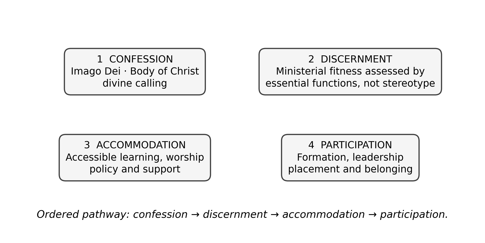
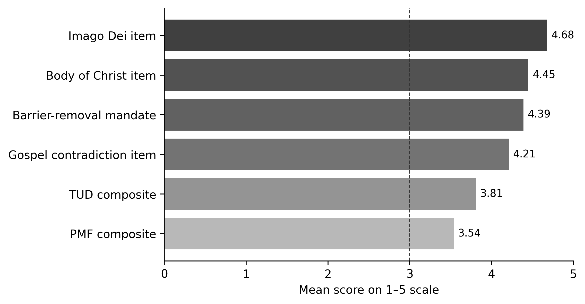

PIONEER PUBLICATION · ACCEPTED ARTICLE · ORIGINAL RESEARCH ARTICLE · SETEHEM: HUMANITIES & SOCIAL SCIENCES × EDUCATION × CHRISTIAN THEOLOGY
Theology in Principle, Inclusion in Practice? Divine Calling and the Theology–Practice Gap in Nigerian Anglican Seminaries
UKULE, Peter¹* · NNAJI, Charles Ogundu¹ · KEHINDE, Adeola¹
¹Department of Christian Studies and Religious Communication, University of Abuja, Abuja, Nigeria
Corresponding author: rev.ukulepeter@gmail.com
Article | Volume/Issue | Published | ISSN | DOI |
|---|---|---|---|---|
e012 | 1(1) | August 2026 | Pending assignment | Pending registration |
DOI: Pending registration. This local production copy is not a public version of record until DOI registration and journal-release checks are complete.
Abstract
Background: Anglican theology affirms the dignity of persons created in the image of God and the vocational agency of every member of the body of Christ, yet those affirmations do not automatically determine seminary practice.Objective: This paper examined whether inclusive theological convictions among Anglican clergy, faculty and administrators were accompanied by comparable recognition of the ministerial fitness and participation of persons with physical disabilities.Methods: A focused secondary analysis was conducted from the post-defence harmonised results of a sequential explanatory mixed-methods Ph.D. study. The realised institutional sample comprised 10 Anglican seminaries across five geopolitical zones. Of 198 Inclusion Attitudes in Theological Education Survey questionnaires distributed, 175 were returned (88.4%). Corrected direction-consistent scoring was used for theological understanding of disability (TUD) and perceived ministerial fitness (PMF); explanatory qualitative evidence came from students with physical disabilities, alumni, diocesan leaders and focus groups.Results: The corrected TUD composite was approximately 3.81/5 and the inclusion-oriented PMF composite approximately 3.54/5. Respondents strongly affirmed the Imago Dei (M=4.68), the indispensability of disabled members in the body of Christ (M=4.45), a theological mandate to remove barriers (M=4.39), and the incompatibility of exclusion with the Gospel (M=4.21). Mixed-method integration nevertheless showed that affirmation did not reliably translate into access, accommodation or recognition of leadership capacity.Conclusion: The central problem is not the total absence of inclusive doctrine but its incomplete institutionalisation. Disability inclusion becomes ecclesially credible only when confession is connected to discernment, accommodation, formation, leadership and accountable participation.
Keywords: disability theology; divine calling; Anglican seminaries; ministerial fitness; theology–practice gap; Nigeria; inclusive theological education
1. Introduction
Theology becomes institutionally visible in the decisions a church makes about who may enter formation, whose body is assumed in the design of the chapel and classroom, whose vocation is treated as credible, and what kinds of support are regarded as ordinary rather than exceptional. For theological education, therefore, disability inclusion is not a peripheral welfare question. It is a test of theological anthropology, ecclesiology and the practical meaning of divine calling.
Within Christian theology, the Imago Dei resists any reduction of human worth to bodily efficiency. Pauline ecclesiology goes further: the apparently weaker members are not merely tolerated but described as indispensable to the body. Disability theology has developed this logic by challenging the assumption that physical normalcy is the natural criterion of vocation, leadership or spiritual maturity (Eiesland, 1994; Yong, 2011). Swinton (2012) similarly argues that the church must move beyond formal inclusion toward belonging, while McMahon-Panther and Bornman (2025) distinguish compassion that leaves hierarchy untouched from justice that redistributes agency and participation.
The Nigerian Anglican context makes the question especially important because seminaries are not simply academic institutions; they are formation sites for clergy who will interpret Scripture, exercise authority and reproduce institutional norms across dioceses and parishes. A seminary can affirm disability-inclusive doctrine at the level of teaching and still reproduce exclusion through admissions, assumptions about priestly embodiment, physical design and placement practices. This article isolates that theology–practice problem as a distinct empirical question.
1.1 Study question and contribution
The article asks: to what extent did respondents who affirmed disability-inclusive theological propositions also recognise persons with physical disabilities as credible candidates for ministerial formation and leadership? The contribution is to separate doctrinal affirmation from ministerial recognition rather than collapse both into a single “attitude toward disability” score. That distinction permits a more precise account of where institutional restricted inclusion begins.
2. Conceptual and theological frame
Three ideas organise the analysis. First, disability theology treats embodiment as part of the theological account of human creatureliness rather than an embarrassment to be overcome. Eiesland’s account of the disabled God and Yong’s biblical theology of disability both unsettle the assumption that divine action depends on bodily conformity. Second, the social model directs attention away from impairment as an individual deficit and toward barriers created by institutions, environments and norms. Third, practical theology asks whether the practices of the church cohere with its stated convictions. Together, these perspectives make the theology–practice gap empirically assessable.
The analytic chain used in this paper is confession → discernment → accommodation → participation. Confession concerns what respondents say about dignity, calling and the body of Christ. Discernment concerns whether they recognise ministerial competence without allowing bodily stereotypes to substitute for essential-function assessment. Accommodation concerns whether institutional conditions make formation realistically possible. Participation concerns whether the person can learn, worship, lead and proceed into ministry as a full member of the ecclesial community.

Figure 1. Analytical chain from theological confession to accountable ecclesial participation. Source: Authors’ synthesis from the parent study and disability-theology literature.
3. Materials and Methods
3.1 Design and study provenance
The parent research employed a sequential explanatory mixed-methods design. This article is a focused publication derived from its post-defence harmonised record and does not introduce new participants or new field observations. The realised institutional sample comprised 10 Anglican seminaries in five geopolitical zones; the final correction record explicitly replaces the earlier unsupported claim of six-zone institutional coverage. The article therefore treats the evidence as multi-institutional and geographically diverse without claiming nationwide institutional representation of every zone.
3.2 Participants and evidence streams
The quantitative attitudinal strand used the Inclusion Attitudes in Theological Education Survey (IATES). Of 198 questionnaires distributed to faculty, administrators and clergy, 175 were returned, giving an 88.4% response rate. The explanatory phase of the thesis engaged 65 current students with physical disabilities, 38 alumni, 28 diocesan leaders and six focus groups. The present article uses the qualitative strand only at the level of verified aggregate themes and integrated inferences; no participant quotation is reproduced without a traceable transcript record.
Table 1. Evidence used in the focused analysis.
Evidence stream | Realised evidence | Use in this paper |
|---|---|---|
IATES survey | 175 of 198 returned (88.4%) | Direction-consistent TUD and PMF findings; selected item means |
Institutional sample | 10 seminaries across five geopolitical zones | Context for theological-formation practice |
Qualitative explanatory strand | 65 current students, 38 alumni, 28 diocesan leaders, six focus groups | Explains how affirmation was experienced in practice |
Post-defence verification | Corrected scoring and effect-size note | Controls interpretation of reverse-worded items and corrected composites |
3.3 Scoring discipline
The post-defence statistical verification note is methodologically important. Negatively phrased TUD and PMF items were reverse-scored before scale interpretation, preventing agreement with exclusionary statements from being misread as inclusion. On that direction-consistent basis, the reconstructed TUD composite is approximately 3.81/5 and the inclusion-oriented PMF composite approximately 3.54/5. These are transparent reconstructions from accepted aggregate tables, not substitutes for a respondent-level archived matrix.
The earlier 19-item pilot reliability coefficients belong to instrument development and are not presented here as reliability estimates for the final 25-item IATES. The final-form reliability would require recalculation from item-level final administration data. This distinction is retained to avoid overstating measurement evidence.
4. Results
4.1 Strong theological affirmation
The most explicit theological propositions attracted high agreement. The statement that a person with disability fully bears the Image of God recorded M=4.68 (SD=.55). The proposition that the body of Christ is incomplete without the leadership of persons with disabilities recorded M=4.45 (SD=.71). Respondents also agreed that the church has a theological mandate to remove barriers (M=4.39, SD=.78) and that excluding persons with disabilities from seminary contradicts the Gospel (M=4.21, SD=.95). These results indicate that overt doctrinal rejection of disability inclusion was not the dominant pattern.
4.2 More qualified recognition of ministerial fitness
The corrected inclusion-oriented PMF composite was approximately 3.54/5, lower than the TUD composite of approximately 3.81/5. The difference is modest numerically but important conceptually: respondents were more consistently comfortable affirming theological dignity than translating that dignity into judgments about ministry, leadership and institutional accommodation. The mixed-method joint display records the integrated inference as “conditional acceptance remained visible,” with fitness judgments often relying on bodily norms.

Figure 2. Selected theological affirmation items and corrected direction-consistent composite scores. The item bars are raw positive-item means; TUD and PMF are corrected composites. Source: post-defence harmonised thesis results.
Table 2. Key indicators of the theology–practice gap.
Indicator | Result | Interpretation |
|---|---|---|
TUD composite | ≈3.81 / 5 | Inclusive theological affirmation is generally positive |
PMF composite | ≈3.54 / 5 | Recognition of ministerial fitness is positive but more conditional |
Imago Dei item | M=4.68 | Strong affirmation of equal human dignity |
Body of Christ item | M=4.45 | Strong affirmation of ecclesial indispensability |
Barrier-removal mandate | M=4.39 | Strong normative support for institutional action |
Exclusion contradicts Gospel | M=4.21 | Strong moral-theological rejection of exclusion |
4.3 Mixed-method integration
The qualitative integration explains why a relatively inclusive theological profile did not produce equivalent institutional inclusion. Across the verified coding framework, the relevant themes were CALL, SCRIPT, FITNESS, CARE, AGENCY, POLICY and PLACEMENT. The integrated finding was not that respondents lacked compassion. Rather, compassion could coexist with assumptions that persons with physical disabilities were primarily recipients of ministry, not leaders who exercise authority. In that configuration, goodwill does not necessarily alter admissions, formation requirements, physical access or placement decisions.
5. Discussion
The results support a distinction between theological assent and ecclesial enactment. A church may affirm the Imago Dei while retaining an implicit functional ideal of the priest as physically strong, mobile and publicly commanding. The contradiction is especially significant in Anglican theological education because sacramental and pastoral formation are embodied practices: they are learned in chapels, classrooms, residences, placements and relationships of authority. If those environments presume one bodily norm, the practical meaning of the church’s theology is narrowed.
Eiesland (1994) and Yong (2011) are useful here because both reject the notion that bodily difference is external to theological reflection. The issue is not whether disability can be accommodated after the “normal” seminary has been designed. The issue is whether the institution’s account of ministry was too narrow from the beginning. Hauerwas (2004) similarly treats disability as a test of whether the church understands community as mutual dependence rather than competitive capacity.
The findings also clarify the difference between compassion and justice described by McMahon-Panther and Bornman (2025). Compassion may generate prayer, pastoral care and individual assistance; justice requires predictable access, decision rules, reasonable accommodation and participation in leadership. The parent study’s qualitative synthesis—welcome without full agency, care without secure rights, and vocation repeatedly subjected to bodily doubt—fits this distinction closely.
5.1 Theological implications
Theologically, the data suggests that the critical task is not merely adding more statements about inclusion. The stronger task is hermeneutical and ecclesiological: ministerial fitness must be defined by the essential functions of vocation and office, interpreted through the church’s doctrines of grace, giftedness and the body of Christ, rather than by culturally inherited images of physical normalcy. Disability theology should therefore be embedded in biblical studies, ecclesiology, pastoral theology, liturgy and field education, not isolated as a specialist topic.
5.2 Institutional implications
Institutionally, seminaries should make the chain from confession to participation explicit. Admissions criteria should distinguish essential vocational requirements from remediable barriers. Accommodation should be planned rather than improvised. Faculty formation should examine implicit assumptions about embodiment. Placement systems should consider gifts, context and reasonable support rather than using disability as a proxy for incapacity. These measures convert theological affirmation into accountable practice.
6. Limitations
The article reports a focused secondary analysis of a parent mixed-methods study. The realised institutional sample covered five geopolitical zones, so claims are bounded accordingly. The corrected TUD and PMF composites are reconstructed from accepted aggregate tables rather than recalculated from a final respondent-level matrix. The analysis therefore emphasises transparent interpretation of the verified headline findings and does not introduce new item-level statistics. Qualitative themes are reported without unverified verbatim quotation.
7. Conclusion
The Anglican respondents studied did not generally deny that persons with physical disabilities bear God’s image or belong within the body of Christ. The more difficult question was whether that theological affirmation reorganised the practices by which vocation is judged, formation is delivered and leadership is entrusted. The evidence shows a measurable gap: inclusive confession was stronger and more stable than ministerial recognition and institutional enactment. Closing that gap requires more than benevolence. It requires a seminary system in which the church’s doctrine of human dignity is visible in admissions, accessibility, formation, placement and the ordinary expectation that persons with disabilities may teach, preside, lead and belong.
Declarations
Table. Publication declarations and research-integrity information.
Declaration | Statement |
|---|---|
Study provenance | Focused publication derived from the post-defence harmonised Ph.D. thesis of Peter Ukule. No new participants or new field data were introduced for this article. |
Ethics and confidentiality | Only aggregate results and verified themes are reported. No participant names or unverified quotations are reproduced. |
Data availability | The article relies on aggregate thesis tables and the correction/verification appendices. Respondent-level data remain subject to the confidentiality conditions of the parent study. |
Authorship | Peter Ukule led the doctoral research; Charles Ogundu Nnaji and Adeola Kehinde supervised the study and are included as co-authors for this focused scholarly publication. |
Statistical integrity | Direction-consistent post-defence values are used. Pilot reliability coefficients from the earlier 19-item form are not misrepresented as reliability estimates for the final 25-item IATES. |
References
Barton, S. J. (2021). Access and disability justice in theological education. Journal of Disability & Religion, 25(3), 279–295.
Braun, V., & Clarke, V. (2022). Thematic analysis: A practical guide. SAGE.
Carter, E. W., et al. (2023). Addressing accessibility within the church: Perspectives of people with disabilities. Journal of Religion and Health, 62(4), 2474–2495.
Creswell, J. W., & Creswell, J. D. (2022). Research design: Qualitative, quantitative, and mixed methods approaches (6th ed.). SAGE.
Degener, T. (2016). Disability in a human rights context. Laws, 5(3), 1–24.
Eiesland, N. (1994). The disabled God: Toward a liberatory theology of disability. Abingdon Press.
Hauerwas, S. (2004). Suffering presence: Theological reflections on medicine, the mentally handicapped, and the church. University of Notre Dame Press.
McMahon-Panther, G., & Bornman, J. (2025). Persons with disabilities in the Christian Church: A scoping review on the impact of expressions of compassion and justice on their inclusion and participation. Journal of Disability & Religion, 29(1), 81–108.
Swinton, J. (2012). From inclusion to belonging: A practical theology of community, disability and humanness. Journal of Religion, Disability & Health, 16(2), 172–190.
Tagwirei, K. (2024). Enabling abilities in disabilities: Developing differently abled Christian leadership in Africa. Theologia Viatorum, 48(1), 252.
World Council of Churches. (2003). A church of all and for all: An interim statement. WCC Publications.
Yong, A. (2011). The Bible, disability, and the church: A new vision of the people of God. Eerdmans.
Aich, B. J. (2025). Biblical theology for God’s people: Perspectives in theological interpretation (Doctoral dissertation, Asbury Theological Seminary).
Tarus, D. (2016). Imago Dei in Christian theology: The various approaches. Online International Journal of Arts and Humanities, 5(1), 18–25.
Publication Record
Article metadata.
Field | Record |
|---|---|
Article identifier | e012 |
Manuscript category | Original Research Article |
Parent study | Ukule, Peter. Ph.D. in Christian Theology, University of Abuja, February 2026; post-defence harmonised copy. |
Journal | CHIATECH JOURNAL SETEHEM, Volume 1, Issue 1 |
Publication month | August 2026 |